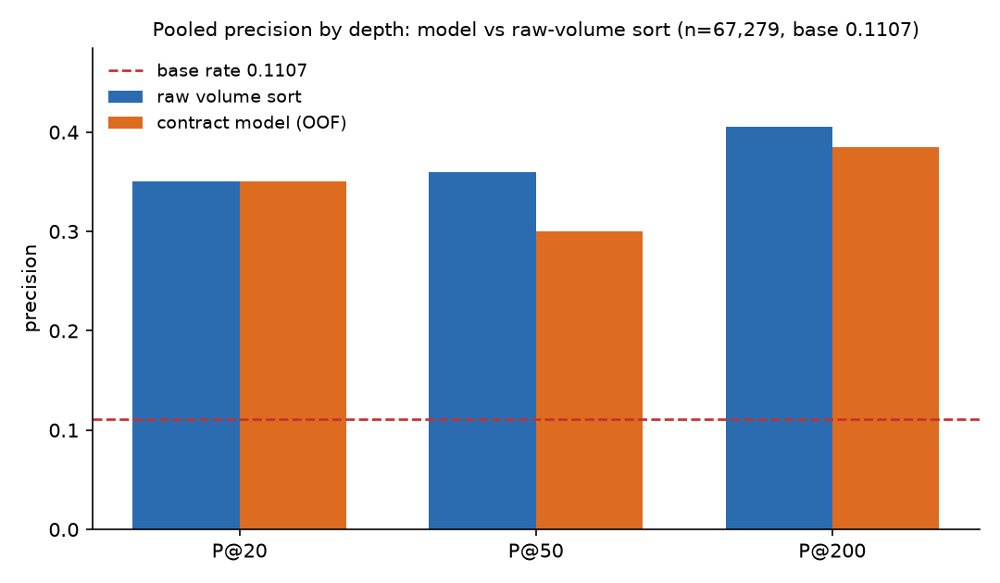
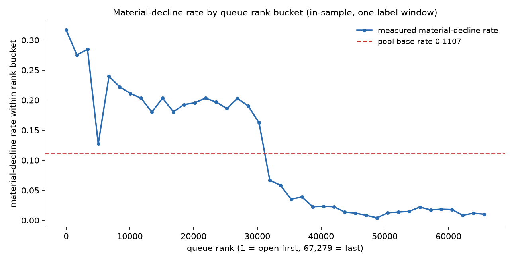

Which pages should a content team review first?
A ranked, honestly-validated triage of 67,279 pages — and where the ranking stops being trustworthy.
Abstract
A content team can only open a fraction of its pages, so the useful output is a defensible order for which pages to review first, not a verdict on every page. This study ranks 67,279 client–content pairs from the FlyRank ML Internship warehouse using a January–February 2026 feature window and a March 2026 label window, where 7,445 pairs are material declines (base rate 0.111). The method fits one degree-2 logistic model on five features and evaluates it with a six-fold, client-grouped out-of-fold split, comparing it against a raw-volume sort and, with a caveat, a frozen rule on the same rows. The model's out-of-fold precision at 50 is 0.300, about 2.7× the random floor of 0.111, but a raw sort by prior volume reaches 0.360 at the same depth, so the model is presented as a ranking aid rather than a predictive win. The output is a review queue that orders pages for human inspection, with limits stated up front: one input carries a measurable signal, the top of the queue is the largest pages only, and one forward window cannot establish stability.
Introduction
A content team starts the month with more pages than it can open. Someone decides which fifty to look at first, usually by gut feel or by sorting a spreadsheet on traffic, and when the portfolio runs to tens of thousands of pages that reading order is itself the product: a good order finds real declines early, and a bad one spends the reviewer's afternoon on pages that were never falling. This is the operating question the work answers — not which pages are declining? but which pages should be reviewed first, given limited capacity?
The hard part is that not every drop is a decline. Traffic also falls for consolidation, when a sibling page absorbs the demand; for seasonality; for shifts in how clicks are distributed; and for plain low-volume noise. A useful review order has to survive those look-alikes: it should concentrate pages where the evidence of real, sustained loss is strongest and leave the rest on watch. FlyRank's own platform makes this call with hand-tuned, rule-based flags and combined scores, but those decisions are deliberately left out of the released data, so any order published here is rebuilt from observable search signals alone.
This work builds and tests one such reading order. It answers a narrow question — which pages should a reviewer open first? — by ranking 67,279 pages by how much they look like a decline under a defined label, and it publishes the ranking alongside the evidence for and against trusting it. The headline result is deliberately unflattering: at the depth a reviewer would actually use, the model does not come out ahead of a raw sort by prior volume.
The work is observational. It measures which pages resemble declines in the window studied, using only information available before the decision point. It does not test whether editing a page recovers traffic, because no intervention was run, and it makes no claim about how any search engine ranks or selects pages — so nothing here should be read as a claim about causes or outcomes.
Data
The source is a pseudonymized search-performance warehouse of roughly 79 million daily rows, published on Hugging Face behind a gated access request. The analysis used only its January–March 2026 partitions, for a lane of 24 clients, condensed into one row per (client, page) pair. The headline number below, 67,279, is that modelled pool — not the size of the warehouse.
Unit of analysis: one (client, page) pair, observed at a single decision point of 1 March 2026. Windows: features from 1 January to 28 February 2026 (59 days); a decision point on 1 March; and a label from 1 March to 31 March (31 days). The feature and label windows do not overlap, and April or later was never read.
Tables used: the daily performance fact table (feature and label source), a per-client dimension table (history start and access flags), and a content dimension table (page age at the decision point).
What was excluded, and why:
| Excluded | Reason |
|---|---|
| Pages under 200 prior impressions | Too little history to call a decline; the pool floor. |
| GA4 engagement columns | Only 8 of 104 clients had GA4 live over the feature window. |
| Last-updated date | 76% of pool rows (78% of frame rows) carry an update dated after the decision point, so any "days since update" feature would read the future. |
| 90-day query table | Its window falls entirely after the decision point. |
One further effect is reported in full rather than hidden: an inner join on the label month drops 235 rows (0.35% of the decided pool) whose pages are gone by March. That makes frame membership mildly outcome-conditioned; the base rate moves by less than 0.00015 across three join readings, so the effect is minor but real. It is a property of the frame, not a leak of the label into the features.
Methodology
The label. A page counts as a material decline when it clears the pool floor (200+ prior impressions), its January–February rate is at least 500 impressions per 30 days, and its March rate drops 20% or more below that prior rate. The label sets a page's March rate against its January–February rate; its 500-impression floor and that denominator both come from the feature window, so the label is not fully separate from it. The features themselves use January–February data only.
The features. Five inputs are scored: prior volume (log impressions), prior click-through rate, prior weighted average position, prior count of active days, and page age at the decision point. A sixth quantity — the January-to-February trend — is read to describe a page but never scored, because adding it lowered the honest out-of-fold result.
The model. One degree-2 logistic regression — the five features plus every squared term and every pairwise product — fit once on the whole pool for deployment. The L2 penalty is 1.0, chosen by an inner client-grouped split inside the training folds only, never on the rows it is reported against. The fit is deterministic (L-BFGS-B from zeros; no sampling).
The baselines. Two baselines are scored on the same rows. The first is a raw sort by prior volume, which requires no fitting at all. The second is a frozen rule from earlier work; its headline number sits on a label whose denominator it shares with the data, so it is reported separately and not compared like-for-like.
Validation. A six-fold, client-grouped out-of-fold split: every pool row is held out exactly once, and no client appears on both sides of a fold. The base rate is printed beside every precision figure, so a reader can always see what "good" is being measured against. The fold seed is 42.
Leakage checks. The feature and label windows are disjoint by construction; permutation importance shuffles each feature inside held-out client blocks; and a deliberate leak — adding the label's own March volume as a feature — drove precision at 50 to 1.000. That last check confirms the evaluation can detect a leak when one exists, which is what makes the honest number believable.
Results
On the pooled out-of-fold rows, the model and a raw volume sort are close, and the volume sort is ahead at depth 50. The base rate is 0.111 throughout.
| Ranker | P@20 | P@50 | P@200 |
|---|---|---|---|
| Random (base rate) | 0.111 | 0.111 | 0.111 |
| Raw volume sort (no fitting) | 0.350 | 0.360 | 0.405 |
| Contract model, 5 features (out-of-fold) | 0.350 | 0.300 | 0.385 |
The honest number the queue inherits is 0.300 at precision 50 — about 15 of the first fifty (three in ten) are material declines under this label, about 2.7× the random floor. A raw sort by prior volume reaches 0.360 at the same depth with no model at all. That is the central finding, stated plainly: on these rows, the model does not beat the obvious baseline.

Averaged across the six folds, the model is slightly ahead of the volume sort — 0.400 against 0.380 at precision 50 — but both sit inside a spread of about 0.10, so no single depth is treated as a win.
| Fold | Rows | Base | Model P@50 | Volume P@50 |
|---|---|---|---|---|
| 1 | 603 | 0.070 | 0.260 | 0.260 |
| 2 | 10,635 | 0.070 | 0.380 | 0.300 |
| 3 | 9,121 | 0.149 | 0.540 | 0.560 |
| 4 | 17,915 | 0.116 | 0.360 | 0.420 |
| 5 | 2,549 | 0.090 | 0.480 | 0.460 |
| 6 | 26,456 | 0.113 | 0.380 | 0.280 |
| Mean | — | — | 0.400 | 0.380 |
For completeness: the earlier frozen rule scored 0.720 on this label, but that number shares the January–February denominator with the label and is not like-for-like. Its forward probe, measured against a label that cannot see January, was 0.340. Both are shown so neither is mistaken for the model's score.

Limitations and honest framing
One input carries a detectable signal. Under permutation importance inside held-out client blocks, prior volume costs 0.234 of precision at 50 when shuffled. The other four features move the result by between −0.018 and +0.035, which is indistinguishable from noise. The model is, in effect, a volume ranking.
The top of the queue is the largest pages only. The middle volume band (500–2,000 impressions per 30 days) holds 52.3% of all declines in the pool and receives zero slots in the top 50; its first page appears at rank 9,741. The score correlates 0.80 with raw volume. The queue is honest about the biggest pages and structurally blind to the middle of the portfolio.
The label contains its own floor. A material decline requires at least 500 prior impressions, so 40.2% of the pool cannot be a decline by construction. The model's only validated input — prior volume — is written on the same quantity as that floor, which is the deepest reason the ranking tracks volume.
One forward window only. Features end on 28 February and the label is March. April was never read, so there is no second window in which to test whether any of this is stable.
Outcome-conditioned membership. The March inner join that removes 235 pages (0.35%) makes the frame slightly dependent on the outcome, as described in the Data section. The effect on the base rate is below 0.00015, but it is a real (if minor) distortion of the population.
Excluded fields. The last-updated date is excluded because 76% of pool rows (78% of frame rows) carry post-decision updates; GA4 columns are excluded because only 8 of 104 clients had GA4 live over the window. No causal or search-engine claim is made anywhere on this page: the score says a page looks like a decline under one label, not why, and no intervention was run to test whether acting on it helps.
Ranked recommendations
The ranking becomes useful when it is turned into actions a person can take. Three actions are assigned, from two facts the evidence actually supports: which prior-volume band a page sits in, and whether its January-to-February trend is already sliding. Nothing else — no automated edit, no publish, no client notification — is triggered from this score.
| Action | Who | Measured decline rate | n |
|---|---|---|---|
| Refresh | Top 50 and already sliding | 0.750 | 16 |
| Protect | Top 50 and holding | 0.176 | 34 |
| Monitor | Everything else | 0.110 | 67,229 |
In practice a reviewer opens the sixteen refresh pages first; the thirty-four protect pages are holding, so no action is taken on them this week, and the remaining 67,229 pages stay on a watch list. Reason codes name only the two supported facts (volume band, and holding versus sliding), so the queue never explains itself with a feature that the permutation test found to be noise.
One caution on the refresh rate: the sliding flag and the label are both computed from the same January–February data, so a steeper prior drop is read on the same window the label reads. Part of the 0.750 is mechanical rather than a separate signal.
Two actions are deliberately withheld. Automatic expansion and pruning of pages are not offered, because nothing in this evidence says a page earning 200 or more prior impressions should be created or removed. They stay out until something tests them.
Reproducibility
The repository carries the full trail. Each notebook below is the source for one part of the work, and each writes a small machine-readable record of its numbers. The capstone notebook reads those records only, so it reruns offline in seconds:
| Notebook | Contribution |
|---|---|
w01_research_question.ipynb | The question and the lane. |
w03_data_contract.ipynb | The data contract: tables, windows, exclusions. |
w04_baseline_score.ipynb | The frozen rule baseline. |
w05_model.ipynb | The model and the client-grouped holdout. |
w06_validation_audit.ipynb | The honest out-of-fold evaluation and leakage checks. |
w07_action_playbook.ipynb | The ranked queue and the action playbook. |
capstone.ipynb | Reads the records and mirrors this page; runs offline. |
The fold seed is 42 with six client-grouped folds, and the deployment fit is deterministic. The warehouse is gated on Hugging Face and needs an access request and a read token; no data is included in the repository, and the ranked queue is regenerated rather than published. The code lives at github.com/Divyanshu10045/flyrank-assignments.
Acknowledgments and data credit
Built on the FlyRank ML Internship dataset — https://flyrank.ai.
All data is pseudonymized. This page contains only aggregates: no client names, page URLs, query text, or row-level records appear anywhere in it.